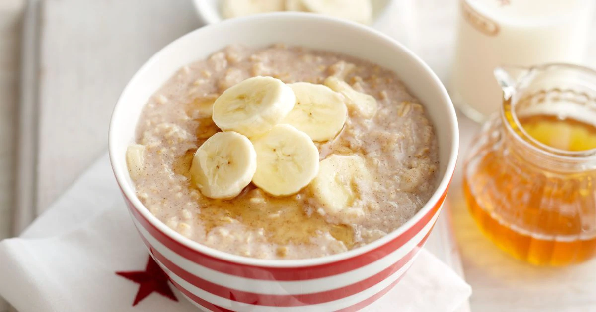

4dl vett
1 banaan
1 tl mett
veidi soola
Lisa julgelt soola.
Sega kuni puder on ühtne mass. Kuni 5min.
Tükelda banaan.
Teiselda puder kaussi.
Lisa banaani tükid ja mett.
Serveerida soojalt.
Hind: 0.6 eurot | Portsjonid: 2 | Hind portsjoni kohta: 0.3eur | Valmistusaeg: 5min
Koostisosad:
4dl kaerahelbeid4dl vett
1 banaan
1 tl mett
veidi soola
Valmistamise juhised:
Helbed vette ja vesi keema.Lisa julgelt soola.
Sega kuni puder on ühtne mass. Kuni 5min.
Tükelda banaan.
Teiselda puder kaussi.
Lisa banaani tükid ja mett.
Serveerida soojalt.